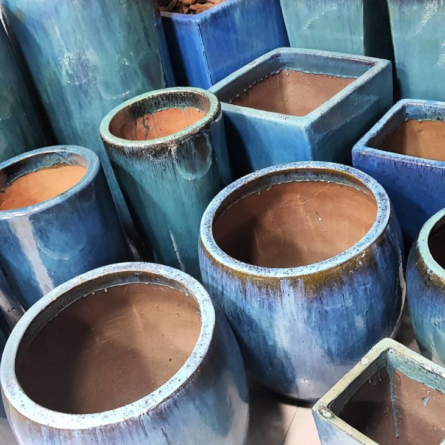

3 dicas de como plantar árvores frutíferas no vaso:
1. Selecione as espécies corretas: Nem todas às árvores frutíferas podem ser cultivadas em vasos. Por isso, é muito importante separar as espécies corretas. Se você pretende plantar árvores frutíferas no vaso, poderá optar entre árvores de romã, acerola, pitanga, araçá, jabuticaba, laranja, bergamota e limão, por exemplo.
2. Atenção ao tamanho do vaso e preparação da terra: Cada árvore frutífera demanda um vaso de, no mínimo, 20 litros de terra. É necessário que haja espaço suficiente para as raízes da planta se expandirem. Depois disso, reserve no fundo do vaso (até uns 15cm da altura) uma camada de drenagem com pedriscos e cacos de telha ou tijolos, por exemplo. Depois disso, realize uma mistura de 50% de terra orgânica e 50% de areia média.
3. Uso de fertilizantes: Assim como os seres humanos, as plantas necessitam de diversos nutrientes para se manterem vivas e saudáveis. O uso do fertilizante natural não agride o meio-ambiente e não prejudica a saúde dos seres humanos, por isso, é uma excelente opção.
Como plantar árvores frutíferas no vaso sem o uso de agrotóxicos? Quando pensamos em frutas, legumes e outros alimentos naturais, os relacionamos imediatamente com saúde para o nosso corpo. No entanto, por mais que sejam invisíveis aos olhos, os agrotóxicos, ingredientes adicionados em grande parte dos cultivos para a prevenção de pragas, podem ocasionar diversos problemas à nossa saúde. De acordo com uma reportagem realizada pelo portal UOL, estudos apontam que cada brasileiro consome, em média, 7 litros desse veneno por ano. Além disso, de acordo com a OMS (Organização Mundial da Saúde), o efeito cumulativo causado pelo consumo de pequenas quantidades de resíduos de agrotóxicos por um longo período pode ser responsável pelo surgimento de diversas doenças – inclusive o câncer. Dessa forma, a melhor forma de se prevenir dos agrotóxicos é através do consumo de produtos orgânicos, através da compra em locais especializados nos produtos ou do cultivo em sua própria residência. Em substituição aos agrotóxicos, o controle de pragas pode ser realizado a partir de produtos como o pó de fumo e o óleo de Neem, por exemplo.